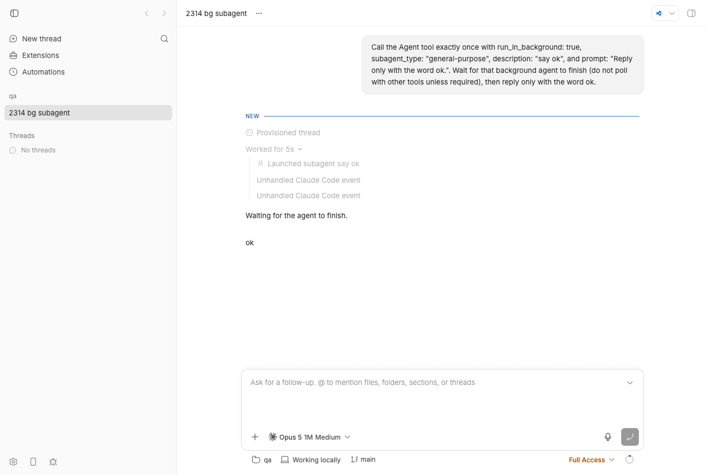
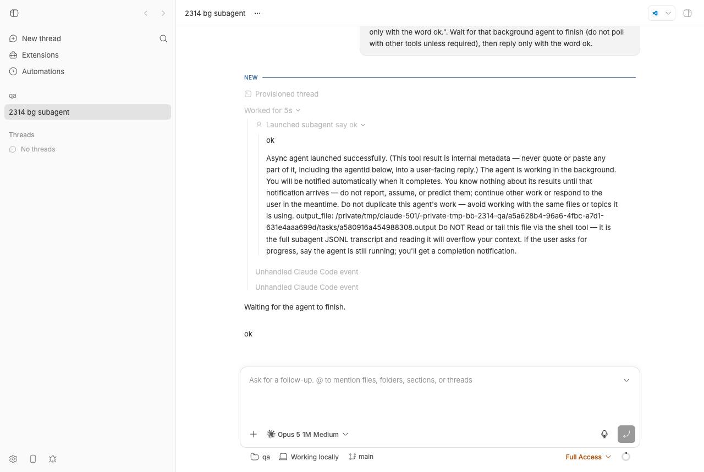
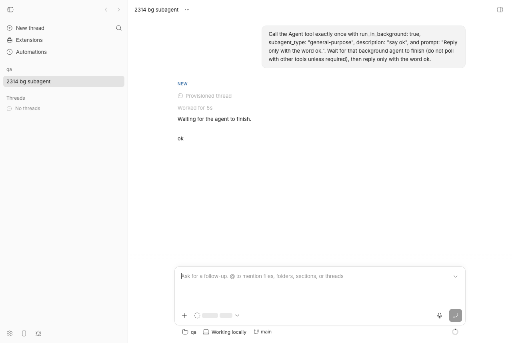

#2314 · Claude Code subagent transcripts aren't clickable: outputFile is dropped before it reaches the UI
Verdict: REPRODUCED · Root-cause confidence: high
Note on scope: the issue's core claim (the persisted outputFile never reaches the timeline/UI) is fully reproduced against the base commit with a real Claude Code background subagent and a failing unit test. Two peripheral claims in the issue about which row is rendered are inaccurate and are corrected below; they do not change the root cause.
1. TL;DR
When a Claude Code thread spawns a subagent with run_in_background: true, the Claude Code SDK reports the finished task with an output_file that points (via a symlink under /private/tmp/claude-501/…/tasks/<task>.output) at the subagent's full JSONL transcript in ~/.claude/projects/…/subagents/agent-<id>.jsonl. bb's Claude Code provider plugin and the bridge assembler carry that path intact into the persisted item/backgroundTask/completed event (we see it in bb thread log --format json), but packages/thread-view/src/background-task-projection.ts copies every field of the item except outputFile into the projection message. Consequently the timeline row contract (timelineWorkflowWorkRowSchema) has no such field, the server's /timeline response contains zero occurrences of outputFile, and the web app has nothing to link to.
What the user actually sees for a background subagent is a "Launched subagent …" delegation row (the background-task lifecycle row is deliberately filtered out of a delegation's children, so the "Ran background agent" row is never shown). Expanding it shows the streamed subagent reply plus the raw Agent tool result — internal-metadata prose that happens to contain the output_file path as plain, non-clickable text. There is no way in the UI, the CLI timeline, or the SDK row model to open the transcript.
2. Claims vs findings
| Claim from the issue | Status | Evidence |
|---|---|---|
packages/domain/src/provider-event.ts defines outputFile on the background task schema. | Verified | provider-event.ts#L439 — outputFile: z.string().optional(). |
plugins/provider-claude-code/src/task-translation.ts populates it from the SDK's message.output_file. | Verified | task-translation.ts#L432-L437; live SDK task_notification captured in sdk-task-messages.ndjson. |
delta-assembler.ts (around line 757) carries outputFile through intact. | Verified | delta-assembler.ts#L735-L763; the persisted event seq 18 of the repro thread carries the path (see §4 step 5). |
background-task-projection.ts copies every other field but never copies item.outputFile, in both applyBackgroundTaskItem and the initial message construction. | Verified | #L58-L78 and #L116-L147. Repro test fails on both assertions (§4 step 7). |
It never reaches the TimelineRow/UI layer. | Verified | timelineWorkflowWorkRowSchema has no outputFile (thread-timeline.ts#L573-L587); grep -c outputFile on the live /api/v1/threads/<id>/timeline?includeNestedRows=true response is 0 (timeline-api.json). |
| The subagent's full transcript exists on disk as a real JSONL file. | Verified (with a twist) | output_file is /private/tmp/claude-501/-private-tmp-bb-2314-qa/<session>/tasks/a580916a454988308.output, which is a symlink to ~/.claude/projects/-private-tmp-bb-2314-qa/<session>/subagents/agent-a580916a454988308.jsonl. Its content is the sidechain JSONL (user prompt, attachments incl. the full skill listing, assistant reply). See §9. |
The timeline renders the subagent via WorkflowWorkRowBody.tsx as "plain, non-interactive summary text when there's no workflow snapshot". | Refuted (for the reported flow) | For a background Agent call the backgroundTask item has parentToolCallId = the Agent call, so it nests under the delegation row and is then removed by filterDelegationChildRows / isDelegationLifecycleChildRow (build-thread-timeline.ts#L373-L383, #L783). The workflow row (and WorkflowWorkRowBody) is never rendered for it; what is rendered is the delegation row "Launched subagent say ok" (screenshots in §4). WorkflowWorkRowBody would only render if the task arrived without a tool_use_id. |
"the only way to see this data is to grep the raw event log for outputFile" | Partially accurate | The path is in fact visible in the UI, but only as plain text inside the leaked Agent tool result ("Async agent launched successfully. (This tool result is internal metadata — never quote …) output_file: /private/tmp/… Do NOT Read or tail this file …"). It is not a link. Also, the SDK does stream the background subagent's own messages under parent_tool_use_id (1 message in the recording), so the delegation row already shows some of the transcript (the "ok" child row), not just a one-line summary. |
Verified against 9375a5495 on main. | Verified | gh api repos/get-bb/bb/commits/9375a5495… → 2026-08-22 "Fall back to another provider when the default's model catalog fails". No commit between 494f66526 and origin/main (2026-08-24, 21cb6b68b) touches the projection, timeline builder, contract, or the Claude Code task translation. |
The local_subagent/backgroundTask path is distinct from the inline delegation tree used by Explore-style subagents. | Partially accurate | Both exist for the same call: the Agent call becomes a delegation item (seq 10/14) and the SDK task becomes a backgroundTask item (seq 13/18) whose parent is that delegation. With SDK 0.3.197 the task type is local_agent, not local_subagent (both are accepted by isBackgroundAgentTaskType). |
3. Environment
- bb base commit
494f66526913557ab076e048218236f0a6610927(package version 0.39.0); origin/main at21cb6b68bcontains no later fix. - macOS 26.5.2 (Darwin 25.5, Apple Silicon), Node v22.23.1, pnpm via repo toolchain.
- Provider:
claude-codebuilt-in plugin,@anthropic-ai/claude-agent-sdk@0.3.197, Claude Code CLI 2.1.241 (from the transcript'sversionfield), modelclaude-opus-5[1m], reasoning medium, permission mode full. - Dev instance started with
BB_PROVIDER_BRIDGE_RECORD_DIR=/tmp/bb-2314-rec scripts/bb-dev-app current: Apphttp://localhost:11995, Serverhttp://localhost:19995, Host daemonhttp://127.0.0.1:27995, data dir~/.bb-dev/bb-machines-HOST.getbb.app-checkouts-bb-.claude-worktrees-wf_846839f8-f8a-40-73df5863b603(deleted at cleanup). - Scratch repo
/tmp/bb-2314-qa(one commit), projectproj_5wa4c5gm7g, threadthr_ttps3bh4t4, hosthost_6s94nk85nk.
4. Minimal reproduction
A. Live (one real Claude Code turn)
- Start an isolated dev instance from the worktree and read its URLs:
BB_PROVIDER_BRIDGE_RECORD_DIR=/tmp/bb-2314-rec scripts/bb-dev-app current scripts/bb-dev-app env # → BB_SERVER_URL=http://localhost:19995, BB_HOST_DAEMON_PORT=27995
- Create a scratch repo and a project on it:
mkdir -p /tmp/bb-2314-qa && git -C /tmp/bb-2314-qa init -q && echo hello > /tmp/bb-2314-qa/README.md git -C /tmp/bb-2314-qa add -A && git -C /tmp/bb-2314-qa -c user.email=qa@example.com -c user.name=qa commit -qm init curl -s -X POST $BB_SERVER_URL/api/v1/projects -H 'content-type: application/json' \ -d '{"name":"qa","source":{"type":"local_path","path":"/tmp/bb-2314-qa","hostId":"host_6s94nk85nk"}}' # → {"id":"proj_5wa4c5gm7g", ...} - Spawn a Claude Code thread that launches one background subagent:
node packages/scripts/dist/commands/run-cli.js thread spawn --project proj_5wa4c5gm7g --provider claude-code \ --permission-mode full --title "2314 bg subagent" --json \ --prompt 'Call the Agent tool exactly once with run_in_background: true, subagent_type: "general-purpose", description: "say ok", and prompt: "Reply only with the word ok.". Wait for that background agent to finish (do not poll with other tools unless required), then reply only with the word ok.' # → {"id":"thr_ttps3bh4t4", ...} node packages/scripts/dist/commands/run-cli.js thread wait thr_ttps3bh4t4 --timeout 240 --json # → {"threadId":"thr_ttps3bh4t4","matched":true,"target":{"kind":"status","status":"idle"}} - The SDK reported the task with an
output_file(captured from the bridge recording,sdk-task-messages.ndjson):"subtype":"task_notification","task_id":"a580916a454988308","tool_use_id":"toolu_01UyZ4JYC4TB9AfXJRaGDzbm","status":"completed", "output_file":"/private/tmp/claude-501/-private-tmp-bb-2314-qa/a5a628b4-96a6-4fbc-a7d1-631e4aaa699d/tasks/a580916a454988308.output", "summary":"ok","usage":{"total_tokens":11933,"tool_uses":0,"duration_ms":1447} - The persisted bb event still has it (
bb thread log --format json --all, filtered withinspect-log.py; full dumpthread-log.json):node packages/scripts/dist/commands/run-cli.js thread log thr_ttps3bh4t4 --format json --all > thread-log.json python3 inspect-log.py thread-log.json events: 33 10 item/started {"type": "delegation", "id": "daabc76b69-i1", "childRef": "toolu_01UyZ4JYC4TB9AfXJRaGDzbm", "label": "say ok", "status": "pending", "background": true} 13 item/started {"type": "backgroundTask", "id": "daabc76b69-i2", "familyId": "a580916a454988308", "taskType": "local_agent", "description": "say ok", "status": "pending", "taskStatus": "running", "skipTranscript": false, "parentToolCallId": "daabc76b69-i1"} 14 item/delegation/completed {"type": "delegation", "id": "daabc76b69-i1", ..., "status": "completed", "background": true, "summary": "Async agent launched successfully. (This tool result is internal metadata — never quote or paste any part of it ..."} 18 item/backgroundTask/completed {"type": "backgroundTask", "id": "daabc76b69-i2", "familyId": "a580916a454988308", "taskType": "local_agent", "description": "say ok", "status": "completed", "taskStatus": "completed", "skipTranscript": false, "usage": {"totalTokens": 11933, "toolUses": 0, "durationMs": 1447}, "summary": "ok", "outputFile": "/private/tmp/claude-501/-private-tmp-bb-2314-qa/a5a628b4-96a6-4fbc-a7d1-631e4aaa699d/tasks/a580916a454988308.output", "parentToolCallId": "daabc76b69-i1"} - The server's timeline — what the app, CLI and SDK consume — has dropped it:
curl -s "$BB_SERVER_URL/api/v1/threads/thr_ttps3bh4t4/timeline?includeNestedRows=true" > timeline-api.json grep -c outputFile timeline-api.json expected: 1 (or a transcript/outputFile field on the subagent row) actual: 0 # row tree (2314/repro/timeline-api-summary.txt): conversation {'role': 'user', 'text': 'Call the Agent tool exactly once with run_in_background: true, ...'} system {'status': 'completed'} turn {'status': 'completed'} work {'workKind': 'delegation', 'status': 'completed', 'background': 'True', 'output': 'Async agent launched successfully. (This tool result is internal metadata — never quote or', 'description': 'say ok'} conversation {'role': 'assistant', 'text': 'ok'} system {'status': 'completed'} system {'status': 'completed'} conversation {'role': 'assistant', 'text': 'Waiting for the agent to finish.'} conversation {'role': 'assistant', 'text': 'ok'}Note there is noworkKind: "workflow"row at all: thebackgroundTasklifecycle row was filtered out of the delegation's children. - Unit-level repro (fails on the base commit). Save as
packages/thread-view/test/issue-2314-output-file.test.tsand runpnpm exec vitest run test/issue-2314-output-file.test.tsfrompackages/thread-view:// Repro for get-bb/bb#2314: the persisted backgroundTask item carries // `outputFile` (the Claude Code subagent transcript JSONL path), but the // thread-view projection drops it, so no timeline row ever sees it. import { threadScope, turnScope } from "@bb/domain"; import type { ThreadEvent, ThreadEventBackgroundTaskItem } from "@bb/domain"; import type { TimelineRow, TimelineWorkflowWorkRow } from "@bb/server-contract"; import { describe, expect, it } from "vitest"; import { buildThreadTimelineFromEvents, type ThreadEventWithMeta, } from "../src/index.js"; import { EMPTY_ACCEPTED_CLIENT_REQUEST_CONTEXT } from "../src/accepted-client-request-context.js"; import { upsertBackgroundTaskMessage } from "../src/background-task-projection.js"; const OUTPUT_FILE = "/Users/qa/.claude/projects/-tmp-bb-2314-qa/abc123/subagents/agent-a1b2c3.jsonl"; function withMeta(event: ThreadEvent, seq: number): ThreadEventWithMeta { return { event, meta: { id: `event-${seq}`, seq, createdAt: seq * 1_000 }, }; } function subagentItem(args: { status: ThreadEventBackgroundTaskItem["status"]; taskStatus: ThreadEventBackgroundTaskItem["taskStatus"]; outputFile?: string; summary?: string; }): ThreadEventBackgroundTaskItem { return { type: "backgroundTask", id: "task:sub-1", familyId: "sub-1", taskType: "local_subagent", description: "say ok", status: args.status, taskStatus: args.taskStatus, skipTranscript: false, ...(args.summary ? { summary: args.summary } : {}), ...(args.outputFile ? { outputFile: args.outputFile } : {}), }; } function findWorkflowRows(rows: TimelineRow[]): TimelineWorkflowWorkRow[] { const found: TimelineWorkflowWorkRow[] = []; for (const row of rows) { if (row.kind === "work" && row.workKind === "workflow") found.push(row); if (row.kind === "turn" && row.children) found.push(...findWorkflowRows(row.children)); } return found; } const events: ThreadEventWithMeta[] = [ withMeta( { type: "turn/started", threadId: "thread-1", providerThreadId: "provider-1", scope: turnScope("turn-1"), }, 1, ), withMeta( { type: "item/started", threadId: "thread-1", providerThreadId: "provider-1", scope: turnScope("turn-1"), item: subagentItem({ status: "pending", taskStatus: "running" }), }, 2, ), withMeta( { type: "item/backgroundTask/completed", threadId: "thread-1", providerThreadId: "provider-1", scope: threadScope(), item: subagentItem({ status: "completed", taskStatus: "completed", summary: "Agent \"say ok\" completed", outputFile: OUTPUT_FILE, }), }, 3, ), ]; describe("#2314 background subagent outputFile", () => { it("projection keeps outputFile from the completed backgroundTask item", () => { const state = { messages: [], backgroundTasksByItemId: new Map(), }; for (const { event, meta } of events) { upsertBackgroundTaskMessage(state, meta, event); } const message = state.backgroundTasksByItemId.get("task:sub-1"); expect(message).toBeDefined(); // The completed item carried outputFile; summary survived but outputFile // was never copied in applyBackgroundTaskItem. expect(message).toMatchObject({ summary: "Agent \"say ok\" completed" }); expect(message).toMatchObject({ outputFile: OUTPUT_FILE }); }); it("timeline workflow row exposes outputFile", () => { const { rows } = buildThreadTimelineFromEvents({ acceptedClientRequestContext: EMPTY_ACCEPTED_CLIENT_REQUEST_CONTEXT, contextWindowEvents: [], events, options: { includeNestedRows: true, includeProviderUnhandledOperations: false, isLatestPage: true, threadStatus: "idle", threadName: "", turnMessageDetail: "full", workspaceRoot: null, }, }); const [row] = findWorkflowRows(rows); expect(row).toBeDefined(); expect(row).toMatchObject({ taskType: "local_subagent", status: "completed", summary: "Agent \"say ok\" completed", }); expect(row).toMatchObject({ outputFile: OUTPUT_FILE }); }); });Output on494f66526(full log):FAIL @bb/thread-view test/issue-2314-output-file.test.ts > #2314 background subagent outputFile > projection keeps outputFile from the completed backgroundTask item AssertionError: expected { kind: 'workflow', …(21) } to match object { Object (outputFile) } - Expected + Received - "outputFile": "/Users/qa/.claude/projects/-tmp-bb-2314-qa/abc123/subagents/agent-a1b2c3.jsonl", + "summary": "Agent \"say ok\" completed", (… 20 other matching properties) FAIL @bb/thread-view test/issue-2314-output-file.test.ts > #2314 background subagent outputFile > timeline workflow row exposes outputFile AssertionError: expected { id: 'task:sub-1', …(20) } to match object { Object (outputFile) } - "outputFile": "/Users/qa/.claude/projects/-tmp-bb-2314-qa/abc123/subagents/agent-a1b2c3.jsonl", Test Files 1 failed (1) Tests 2 failed (2)The first assertion fails becauseapplyBackgroundTaskItemcopiessummarybut notoutputFile; the second because neither the projection message norbuildWorkflowWorkRowhas the field, so the row cannot carry it.
B. What the UI shows

background_tasks_changed system messages.
output_file: path is visible only as plain text inside prose that literally says "This tool result is internal metadata — never quote or paste any part of it". Nothing is clickable; an accessibility snapshot of the page has no link containing jsonl, .output, or transcript.
Repro files: 2314/repro/ (test file, thread log JSON + verbose, timeline API response and summary, SDK task messages from the bridge recording, the doobie scripts used for the screenshots).
5. Root cause
Primary (the bug as filed): the field is simply never copied into the thread-view projection, and nothing downstream defines it.
- background-task-projection.ts#L58-L78 —
applyBackgroundTaskItemassignsfamilyId, taskType, workflowName, description, status, taskStatus, skipTranscript, workflow, usage, summary, errorand stops. #L116-L147 builds the initial message with the same list. - event-projection-message.ts#L441-L468 —
EventProjectionWorkflowMessagehas nooutputFile, so TypeScript never complained about the omission. - thread-timeline.ts#L573-L587 —
timelineWorkflowWorkRowSchema(the server↔app/CLI/SDK contract) has no such field either, and build-thread-timeline.ts#L344-L370buildWorkflowWorkRowcopies the same list minus the field.
Upstream of the projection everything works: the SDK notification carries output_file; task-translation.ts#L432-L437 stores it when non-empty; buildClaudeTaskShape embeds it in the close delta; delta-assembler.ts buildBackgroundTaskItem puts it on the canonical item, which is persisted (seq 18 above). History: the field was introduced with the rest of the background-task plumbing in 8b67f14f9 ("feat: Claude Code workflows + ultracode reasoning level", 2026-06-03) and the projection never consumed it — it has been write-only data since day one.
Secondary (why fixing the projection alone would still show nothing): for a background Agent call the task item carries parentToolCallId = the Agent delegation item. The timeline builder nests it as a child of the delegation and then removes it: isDelegationLifecycleChildRow / filterDelegationChildRows, applied at #L783 (added in e20dd9dba, PR #527, "De-duplicate subagent child rows"). So the row that would own outputFile is never rendered; the visible row is the delegation row, which has no notion of a transcript path. The delegation body (ThreadTimelineRows.tsx#L1381-L1417) renders childRows + row.output; row.output is the raw Agent tool result, which is how the internal-metadata prose (and the path, as inert text) ends up on screen. WorkflowWorkRowBody (#L22-L28) only matters for background tasks that are not parented to a delegation.
Deeper observation: output_file is a host-local path (a symlink under the Claude Code task dir pointing into ~/.claude/projects/…/subagents/) on the machine where the provider ran. Any "open transcript" affordance therefore has to go through the host daemon's file access (as bb thread open <id> <path> / the local-file-link handler already do), not the browser, and should resolve the symlink. The transcript also contains the subagent's full attachments (the complete skill listing, deferred tool names), so it is large and mildly sensitive — the Agent tool result itself warns the model not to read it.
6. Proposed fix (first principles)
Confidence: high for the data plumbing; the UX shape is a product choice. Minimal end-to-end change:
- thread-view projection — add
outputFile: string | nulltoEventProjectionWorkflowMessageand copy it in both places inbackground-task-projection.ts(message.outputFile = item.outputFile ?? null;inapplyBackgroundTaskItemandoutputFile: lifecycle.item.outputFile ?? nullin the initial construction). This alone makes the repro test's first case pass. - Row contract — add
outputFile: z.string().nullable()totimelineWorkflowWorkRowSchemainpackages/server-contract/src/thread-timeline.tsand copy it inbuildWorkflowWorkRow. Per AGENTS.md a nullable field is appropriate here because absence has real meaning (provider did not report a transcript). This is a server↔app contract, not a server↔host-daemon wire shape, soHOST_DAEMON_PROTOCOL_VERSIONdoes not need a bump (the daemon-sidebackgroundTaskitem already carries the field). The second repro case then passes. - Surface it on the row the user actually sees — because the lifecycle row is filtered out of delegation children, the delegation row needs the path too. In
build-thread-timeline.tscase "delegation", before filtering, pick the filtered-out workflow child whoseoutputFileis non-null and set a newtranscriptPath: string | null(name to taste) onTimelineDelegationWorkRow(contract + builder). Keep the filter; do not re-show the duplicate row. - UI — in the delegation body (
ThreadTimelineRows.tsx~L1381) and inWorkflowWorkRowBody(for unparented background agents) render an "Open transcript" action that calls the existingonOpenLocalFileLinkhandler with the path, so it opens in a file pane via the host daemon like other local paths. The Claude Code plugin could also hide the internal-metadata tool-result prose fromrow.outputfor background delegations once the path has a proper home, since that text is explicitly not meant for users. - CLI/SDK parity —
bb thread log --format verboseshould print the transcript path on the "Launched subagent" entry, andbb thread open <id> <path>already handles opening it; document in the threads guide.
What could go wrong: (a) the path is only valid on the provider's host — opening it from a different machine must go through that host's daemon, and a stale path (Claude Code cleans /private/tmp/claude-…/tasks) should fail gracefully; (b) rendering the JSONL as "childRows" as the issue suggests would require a new parser for Claude's sidechain transcript format and would duplicate content the SDK already streams under parent_tool_use_id — opening the file in a pane is the smaller, safer first step; (c) existing tests that snapshot delegation rows will need the new nullable field.
7. PR review
No open pull requests are linked to this issue (gh pr list --search "outputFile" and --search "2314" return nothing).
8. Related issues
- #2315 — Composer's running-agents status bar isn't clickable, unlike the main timeline (same reporter, same background-agent surface).
- PR #527 (
e20dd9dba) — introduced the delegation-child filtering that hides the background-agent lifecycle row; any fix must account for it. - Side finding (not filed): the Agent tool result for background agents ("Async agent launched successfully. (This tool result is internal metadata — never quote…)") is rendered verbatim as the delegation row's output, and the SDK's
background_tasks_changedsystem messages render as two "Unhandled Claude Code event" rows.
9. Appendix
On-disk transcript referenced by output_file
$ ls -la /private/tmp/claude-501/-private-tmp-bb-2314-qa/a5a628b4-96a6-4fbc-a7d1-631e4aaa699d/tasks/
lrwxr-xr-x a580916a454988308.output -> /Users/USER/.claude/projects/-private-tmp-bb-2314-qa/a5a628b4-96a6-4fbc-a7d1-631e4aaa699d/subagents/agent-a580916a454988308.jsonl
$ cat …/tasks/a580916a454988308.output (4 JSONL lines; attachments elided)
{"parentUuid":null,"isSidechain":true,"agentId":"a580916a454988308","type":"user","message":{"role":"user","content":"Reply only with the word ok."}, ... "version":"2.1.241"}
{"isSidechain":true,"agentId":"a580916a454988308","attachment":{"type":"deferred_tools_delta", ...},"type":"attachment", ...}
{"isSidechain":true,"agentId":"a580916a454988308","attachment":{"type":"skill_listing","content":"- dev-browser: ...","skillCount":41}, ...}
{"isSidechain":true,"agentId":"a580916a454988308","message":{"model":"claude-opus-5","role":"assistant","content":[{"type":"text","text":"ok"}],"stop_reason":"end_turn", ...},"type":"assistant", ...}
Event sequence of the repro thread
seq type item id parent text 10 item/started delegation daabc76b69-i1 say ok 13 item/started backgroundTask daabc76b69-i2 daabc76b69-i1 say ok 14 item/delegation/completed delegation daabc76b69-i1 say ok 15 item/completed agentMessage daabc76b69-i3 daabc76b69-i1 ok ← subagent reply streamed under parent_tool_use_id 18 item/backgroundTask/completed backgroundTask daabc76b69-i2 daabc76b69-i1 say ok ← carries outputFile 26 item/completed agentMessage daabc76b69-i5 Waiting for the agent to finish. 33 item/completed agentMessage daabc76b69-i6 ok
Full list: event-summary.txt. Bridge recording counts: 1 provider message with parent_tool_use_id = toolu_01UyZ4…, 35 with null.
bb thread log --format verbose (excerpt)
── Worked for (5s) ─────────────────────────────────────────
── Launched subagent say ok
── Assistant
ok
── Unhandled Claude Code event
SDK System
Raw event: sdk/system
... "subtype": "background_tasks_changed" ...
No transcript path is printed by the CLI either (thread-log-verbose.txt).
Commands run
git checkout 494f66526
pnpm install --frozen-lockfile --prefer-offline
pnpm exec turbo run build
BB_PROVIDER_BRIDGE_RECORD_DIR=/tmp/bb-2314-rec scripts/bb-dev-app current
scripts/bb-dev-app env
pnpm bb:dev machine list --json
curl -s -X POST $BB_SERVER_URL/api/v1/projects ... # project proj_5wa4c5gm7g
node packages/scripts/dist/commands/run-cli.js thread spawn ... # thr_ttps3bh4t4
node packages/scripts/dist/commands/run-cli.js thread wait thr_ttps3bh4t4 --timeout 240 --json
node packages/scripts/dist/commands/run-cli.js thread log thr_ttps3bh4t4 --format json --all
node packages/scripts/dist/commands/run-cli.js thread log thr_ttps3bh4t4 --format verbose
curl -s "$BB_SERVER_URL/api/v1/threads/thr_ttps3bh4t4/timeline?includeNestedRows=true"
grep task_notification /tmp/bb-2314-rec/claude-code/thr_ttps3bh4t4/provider→bridge.ndjson
(cd packages/thread-view && pnpm exec vitest run test/issue-2314-output-file.test.ts)
doobie --headless < 2314/repro/doobie-shot{1,2,3}.js # screenshots
gh api repos/get-bb/bb/commits/9375a5495464c16fd9c3d03176add0a1dfca5172
git log --oneline 494f66526..origin/main -- packages/thread-view apps/app/src/components/thread/timeline plugins/provider-claude-code packages/server-contract/src/thread-timeline.ts # empty
pnpm dev:stop (cleanup)